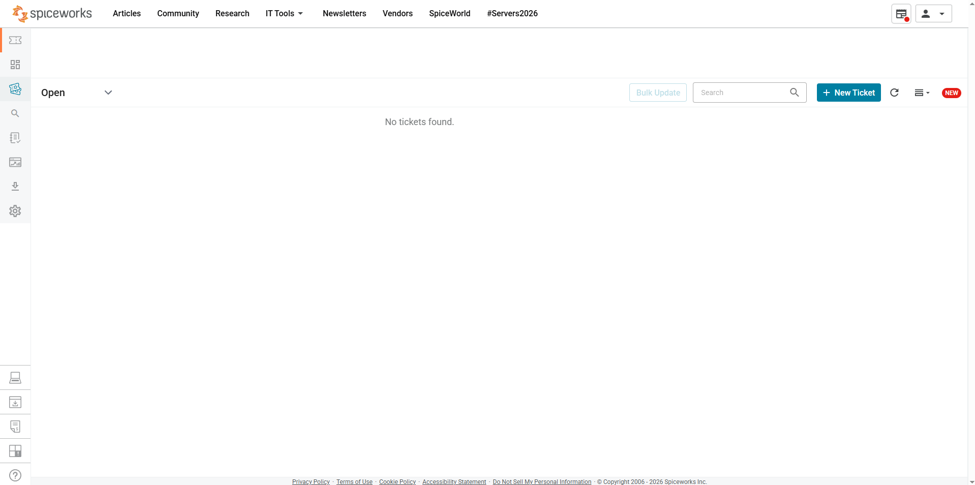
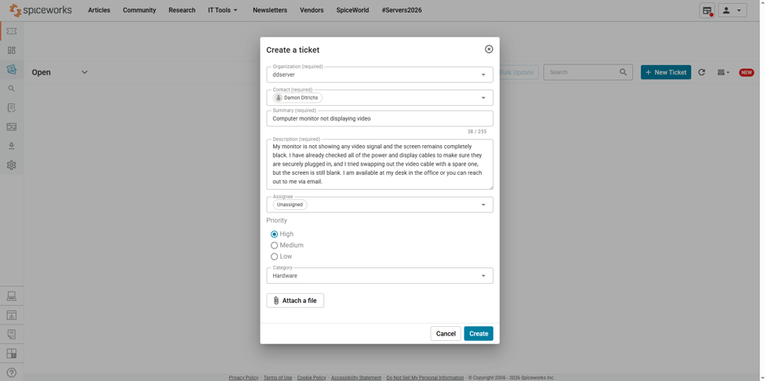
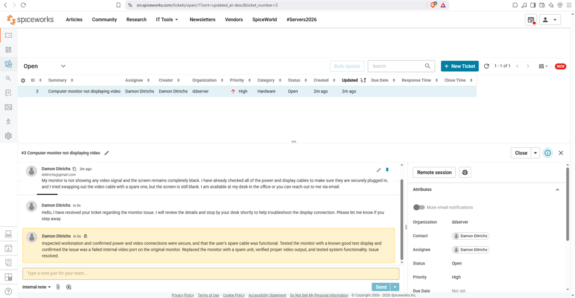
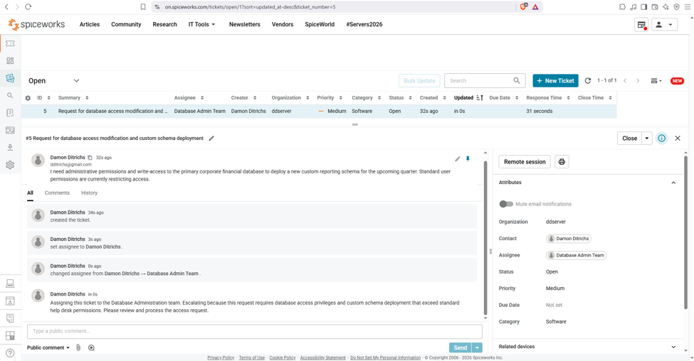

This project demonstrates the deployment and operational management of a corporate IT service desk using Spiceworks Cloud Help Desk. Built to model real-world infrastructure workflows under the organization name ddserver, the environment highlights structured incident triage, hardware troubleshooting methodologies, internal documentation standards, and inter-departmental escalation routing.
To showcase professional-grade IT support capabilities, the ticketing environment was partitioned to handle varying tiers of technical complexity—ranging from frontline physical hardware diagnostics to administrative software access requests requiring cross-departmental coordination.

Initial configuration of the Spiceworks Cloud Help Desk environment for the corporate organization ddserver. This workspace serves as the centralized command center for tracking incoming support volume, sorting active queues by priority and category, and managing agent workflows.

Creation of Ticket #3 detailing a critical hardware failure where a user's workstation monitor failed to display video signals. The intake parameters capture key diagnostic metrics: high priority status, hardware classification, pre-tested cabling states, user availability, and explicit contact preferences for efficient on-site response.

Demonstrates full ticket lifecycle management. After accepting the incident and performing on-site troubleshooting—confirming secure physical connections, functional spare cables, and isolating a faulty internal video port via a known-good test display—the issue was remediated by swapping the monitor. A detailed internal resolution note was logged for future team reference prior to closing.

Illustrates escalation handling for requests exceeding Tier-1 permissions (Ticket #5: Database access modification and custom schema deployment). Adhering to the principle of least privilege, a dedicated staff account was configured for the Database Admin Team, and the ticket was reassigned alongside a professional public handoff note outlining the scope of required privileges.